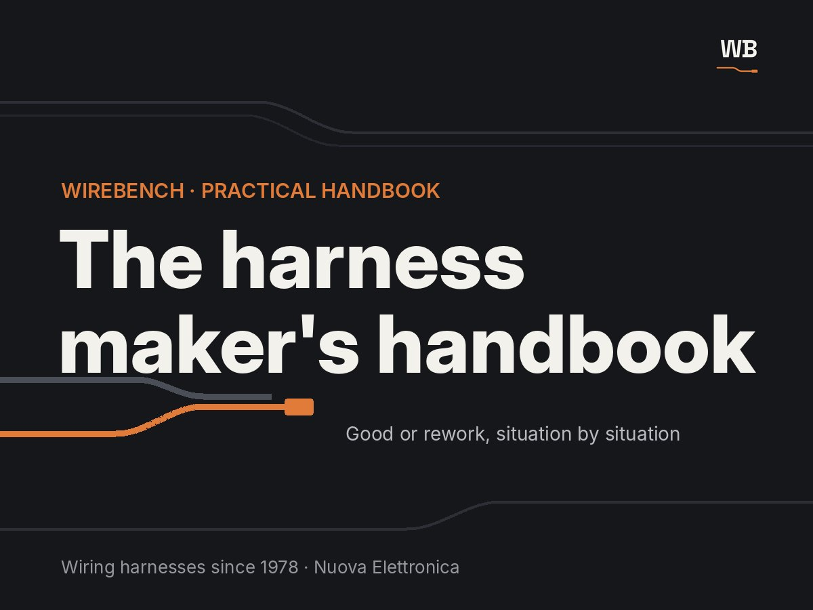
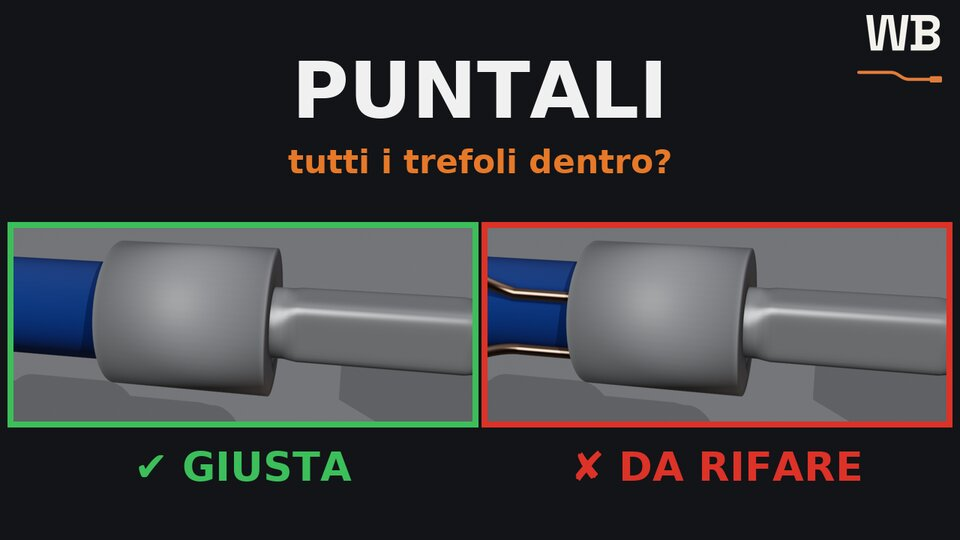

The handbook
WireBench — The Harness Maker's Handbook
Good or rework: how to make and inspect electrical wiring harnesses, situation by situation.
A handbook for people who work at the bench. It does not teach theory: it shows what to do with a wire to cut, a contact to crimp, a connector to fill, a harness to test. And how to tell, by looking at it, whether the job is good or must be redone.
We wrote it at Nuova Elettronica, where we have been making wiring harnesses since 1978. The photos are taken at our benches.

Price and release date are sent to everyone who leaves their details in the form below.
In preparation. The handbook will be released when it is complete, with all its photos. The Italian edition comes first; the English edition is in preparation. Follow the YouTube channel @wirebenchlab to know when it is out.
▶ Watch the chapter videos: ch. 7 · ch. 11 · ch. 12 · ch. 8 · ch. 14 · ch. 16 · ch. 19
Who it is for
- People starting out in a harness shop who want to learn the trade the right way.
- People who already build harnesses and want a reference to check their own work.
- People who train or supervise operators and want a plain text to hand them.
Chapter list
The handbook has six parts and 30 chapters, organised around the situations you meet on the job. For every situation: what to do, how to check it, photos of good work and of work to be redone. Next to the chapters you find the videos: the same job done right and done wrong (Italian edition).
Part 1 — Before you start
- Ch. 0 How to use this handbook
- Ch. 1 The harness and its use
- Ch. 2 Reading work documents
- Ch. 3 Workstation, tools and safety
- Ch. 4 Knowing and storing materials
- Ch. 5 Recognising the wire size and checking it is the right one
Part 2 — Preparing the wires
- Ch. 6 Cutting to length
- Ch. 7 Wire stripping

Wire stripping: good or rework? How to spot cut strands (ch. 7)
The same strip done twice: partial strip with the insulation slug left on, good; with the blade closed too far, cutting strands, rework. Open on YouTube The video loads from YouTube only when you press the button.
Wire stripping: conductor nicked by the blade? Good or rework (ch. 7)
The same full hand strip done twice: blade set for the wire size, cutting only the insulation, good; blade too deep, leaving ring marks on the strands, rework. Open on YouTube The video loads from YouTube only when you press the button. - Ch. 8 Tinning the wires

Tinning wires: solder under the insulation? The bend test (ch. 8)
Short tinning that stops before the insulation, good; solder wicked under the insulation that stiffens the wire, found with the bend test, rework. Open on YouTube The video loads from YouTube only when you press the button. - Ch. 9 Marking and identification
Part 3 — Making the connections
- Ch. 10 Crimping: choosing contact and tool
- Ch. 11 Crimping: doing and checking

Crimping contacts: insulation under the wings? Good or rework (ch. 11)
Conductor and insulation in the right zones of the contact, good; insulation caught in the conductor crimp because the strip is too short, rework. Open on YouTube The video loads from YouTube only when you press the button. - Ch. 12 Crimping: typical defects

Crimping: copper not reaching the end? How to spot it (ch. 12)
Strand tips visible past the wings, good; conductor that does not reach the end of the contact because the strip is too short, rework. Open on YouTube The video loads from YouTube only when you press the button.
Crimping: strands outside the contact? Why it is rework (ch. 12)
Compact strands all inside the wings, good; two strands opened during stripping left outside the wings, rework. Open on YouTube The video loads from YouTube only when you press the button. - Ch. 13 Mechanical tests and cross-sections
- Ch. 14 Screw and spring terminals, ferrules

Ferrules on stranded wire: strands outside the collar? Good or rework (ch. 14)
Strands gathered all inside the ferrule with the insulation at the bottom of the collar, good; two strands left outside the collar and bent back, rework. Open on YouTube The video loads from YouTube only when you press the button. - Ch. 15 Insulation displacement connections
- Ch. 16 Soldering wires

Soldering a solder cup: too much solder? The five looks (ch. 16)
Solder up to the rim of the cup with the wire still visible, good; solder overflowing into a ball that hides the conductor, rework. Open on YouTube The video loads from YouTube only when you press the button. - Ch. 17 Splicing wires
- Ch. 18 Shielded, coaxial and twisted-pair cables
Part 4 — Assembling the harness
- Ch. 19 Connectors: insertion and assembly

Inserting contacts into a connector: until it clicks, then the pull test (ch. 19)
Contact pushed straight in until it clicks and does not move in the pull test, good; contact not locked that backs out of the cavity, rework. Open on YouTube The video loads from YouTube only when you press the button. - Ch. 20 Building the bundle
- Ch. 21 Protection: sleeves, tapes, heat-shrink, grommets
Part 5 — Checking and delivering
- Ch. 22 Visual inspection
- Ch. 23 Electrical testing
- Ch. 24 Non-conforming parts
- Ch. 25 Packing, handling and shipping
Part 6 — Special situations
- Ch. 26 Harnesses by field of use
- Ch. 27 Routing the harness inside equipment or panels
- Ch. 28 Rework and repair
- Ch. 29 The most frequent mistakes
Appendices: A1 Glossary · A2 Practical tables · A3 Printable checklists · A4 Form templates · A5 Recommended tools.
This is the chapter list of the current draft: it may still change before release.
Format
- Downloadable PDF, portrait layout, to read on screen or print.
- Language: Italian edition first. English edition in preparation.
- Each copy carries the buyer's email and purchase date. The handbook is for personal use: copying or sharing it is forbidden.
Questions about the handbook
Do I need experience to read it?
No. It starts from the basics, in plain language, with a glossary of trade terms.
Is it about classic cars?
No. It is a general guide to wiring harness work, valid in every field. Restoring classic harnesses is the job of WireBench Lab.
Want to know more?
Leave your details: we will reply and, if you wish, let you know when the handbook is available. No obligation to buy.
See how we work
On the YouTube channel WireBench Lab (@wirebenchlab) we film our bench work: just hands, tools and harness. Each handbook video shows the same job done right and done wrong.